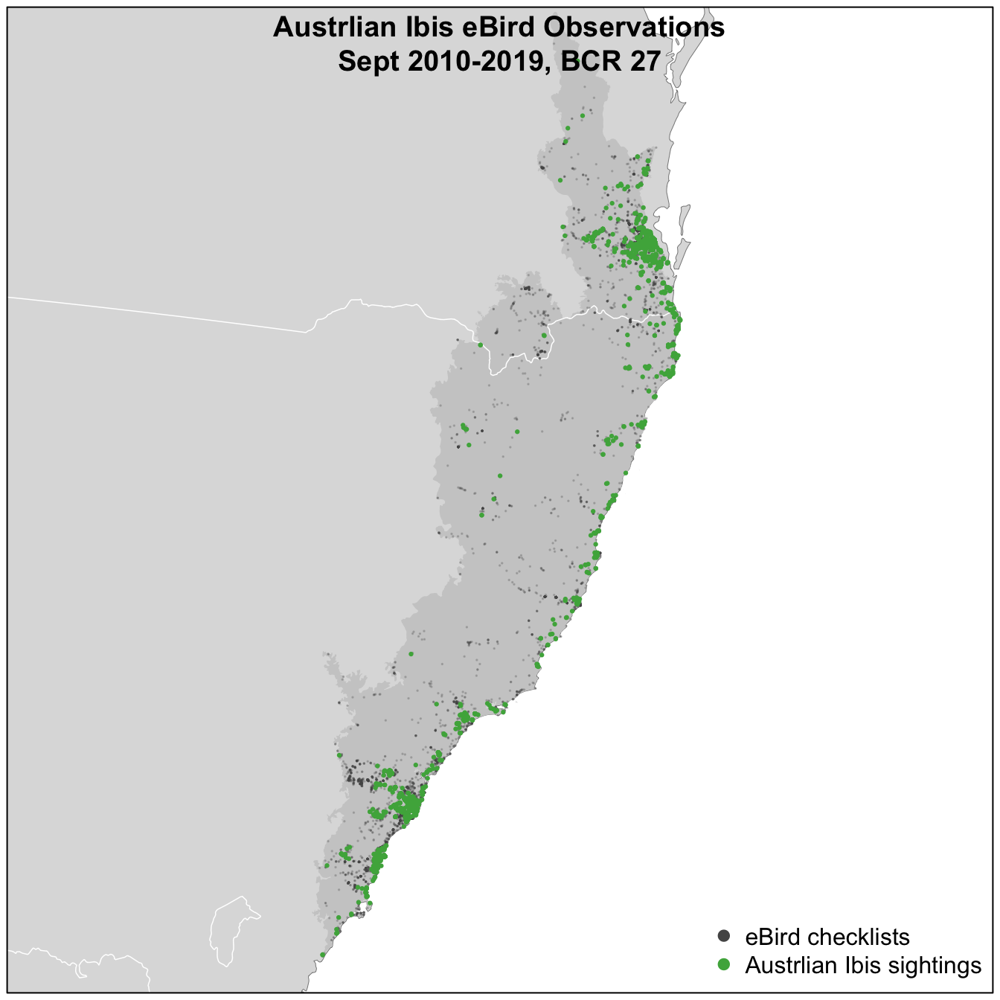

Lesson 10 Introduction
In Part I of this workshop, we saw that eBird provides a wealth of open access bird observation data. The sheer volume of data, combined with the broad spatial, temporal, and taxonomic coverage, make the eBird database a valuable resource for answering a variety of ecological questions. Furthermore, eBird data have two key characteristics that distinguish it from many other citizen science projects and facilitate robust ecological analyses: the complete checklists allow non-detection to be inferred and the effort information associated with a checklist facilitates robust analyses by accounting for variation in the observation process.
Despite the strengths of eBird data, species observations collected through citizen science projects present a number of challenges that are not found in conventional scientific data. The following are some of the primary challenges associated these data; challenges that will be addressed in the following lessons:
- Taxonomic bias: eBirders often have preferences for certain species, which may lead to preferential recording of some species over others. Restricting analyses to complete checklists largely mitigates this issue.
- Spatial and temporal bias: eBird data are not randomly distributed in space and time. Most eBirders submit data from times and places that are convenient (e.g. near roads or on weekends) or likely to produce checklists with high biodiversity (e.g. in good habitats, during migration, or early in the morning). Spatiotemporal subsampling, covered in Part I of this workshop, can reduce the impact of spatial and temporal bias.
- Class imbalance: bird species that are rare or hard to detect may have data with high class imbalance, with many more checklists with non-detections than detections. For these species, a distribution model predicting that the species is absent everywhere will have high accuracy, but no ecological value. Subsampling detections and non-detections independently can be used to address class imbalance.
- Spatial precision: the spatial location of an eBird checklist is given as a single latitude-longitude point; however, this may not be precise for two main reasons. First, for traveling checklists, this location represents just one point on the journey. Second, eBird checklists are often assigned to a hotspot (a common location for all birders visiting a popular birding site) rather than their true location. Filtering eBird data to checklists below a given length (e.g. less than 5 km), and summarizing covariates within a neighborhood around the checklist location, will reduce the impact of spatial imprecision.
- Variation in detectability: detectability describes the probability of a species that is present in an area being detected and identified. It varies by season, habitat, and species. Furthermore, eBird data are collected with high variation in effort, time of day, number of observers, and external conditions such as weather, all of which can affect the detectability of specie. Therefore, detectability is particularly important to consider when predictions are compared between seasons, habitats or species. Since eBird uses a semi-structured protocol, that collects variables associated with variation in detectability, we’ll be able to account for a larger proportion of this variation in our analyses.
The following three lessons will focus on modeling patterns of bird distribution and abundance using eBird data. We won’t delve too deeply into the technical details of these models, rather we’ll focus on demonstrating a set of best practices for distribution modeling that address the specific challenges associated with eBird data. The three types of models that we’ll cover are:
- Encounter rate: expected rate of an average eBirder encountering a species while traveling 1km, 1 hour, at the optimal time of day.
- Occupancy: probability that a site hosts one or more individuals of a species. In this model, detection is explicitly estimated.
- Relative abundance: expected count of a species by an average eBirder while traveling 1km, 1 hour, at the optimal time of day.
Both encounter rate and relative abundance will be modeled using a machine learning approach, where the focus is primarily on prediction. In contrast, occupancy modeling is a more traditional likelihood approach, where the focus is on inference and trying to understand the process that generated the data. Machine learning has the additional benefit that it can learn complex, non-linear relationships between the response and predictor variables, while occupancy models are typically constrained to linear effect and simple interactions.
10.1 Example data
For all the examples in the following lessons, we’ll focus on modeling Australian Ibis in September in the Temperate and Subtropical Forest Conservation Management Zone 27. To prepare data for these lessons, we extracted complete traveling and stationary eBird checklists from the past 10 years and zero-filled them to produce presence-absence data following the methods outlined in Part I of this workshop. In addition, to reduce the variation in detectability between checklists, we restricted checklists to less than 5 hours long and 5 km in length, and with 10 or fewer observers. Finally, we processed remotely sensed land cover and elevation data to be used as covariates for modeling. Specifically, within a 2.5 km neighborhood around each checklist, we used the MODIS MCD12Q1 land cover product to calculate the percentage of 16 different land cover classes and a global elevation dataset to calculate the mean and standard deviation of elevation.
The workshop data package discussed in the Introduction contains all the prepared data. If you haven’t already done so, download and unzip this file, then move all the files in the data/ subdirectory to the data/ subdirectory of your RStudio project. The following map shows the study area and eBird checklists that we’ll use. Note that there are several species in this data package; however, we’ll be focusing on Austrlian Ibis for the following examples.

The code used to generate these data is available in the eBird Best Practices book associated with this workshop. Consult the chapter on eBird Data for details on the eBird data extraction and the chapter on habitat covariates for details on preparing the land cover and elevation data.